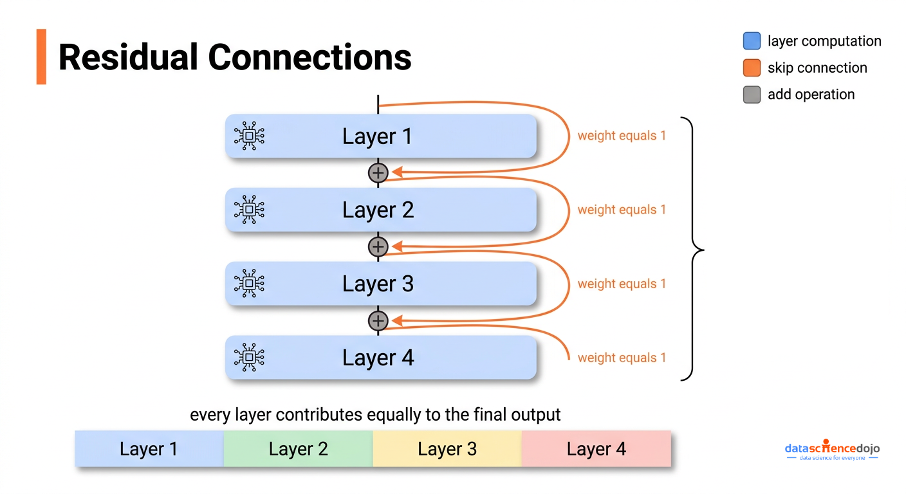
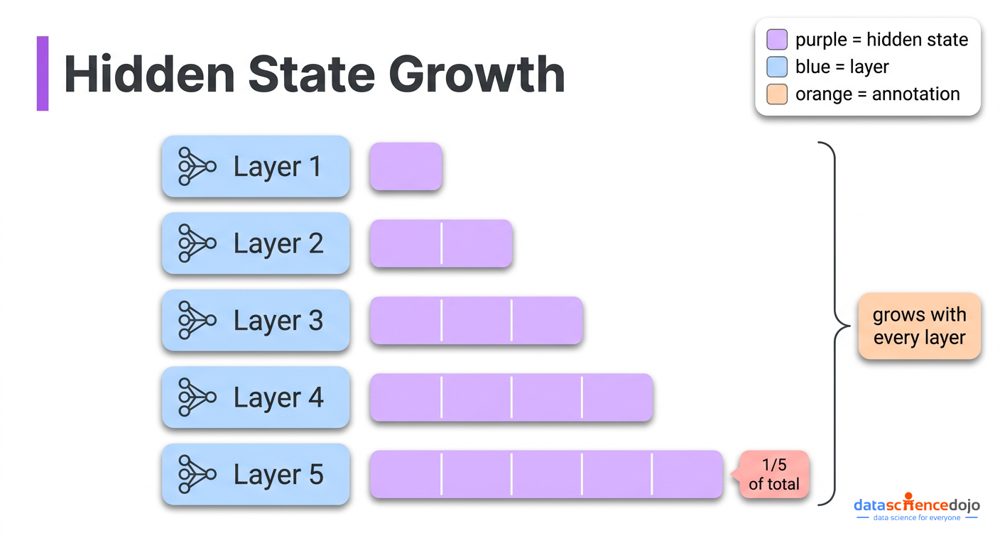
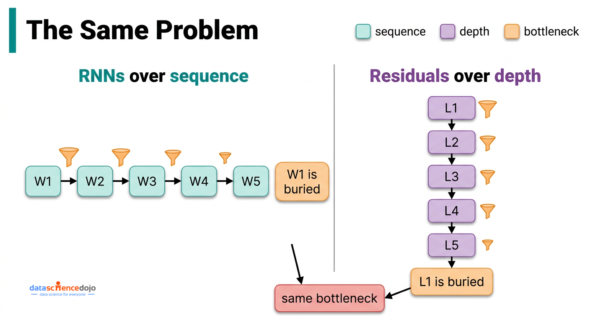

自 2015 年 Transformer 问世以来，几乎所有模型都默认同一件事：把信息从一层传到下一层，最好的方式就是简单相加，每一层贡献相同的权重 1。
Kimi AI 最近的技术报告《Attention Residuals》质疑了这个被沿用十年的假设，给出修复方案，并在所有测试基准上拿到稳定提升。本文拆解它到底解决了什么问题、怎么解决的，以及大规模训练下的工程权衡。
要理解 attention residuals 为什么重要，得先看清标准残差连接实际承担的两个不同角色，而多数讲解只讲了其中一个。
第一个角色是保训练稳定。训练深层网络时，学习信号（梯度）要从输出一路回传到最浅的层。如果没有捷径，信号每过一层要么衰减殆尽、要么失控膨胀。残差连接提供一条「原样直通」的路径，这正是 50 层以上网络能稳定训练的前提。
第二个角色很少被讨论：它控制信息在网络中逐层堆叠的方式。每一层的更新可以写成本文开头的等式——新隐藏态等于旧隐藏态加上本层算出的东西。沿所有层追下去，进入任意一层的数值，就是原始输入加上前面每一层的输出，而且全部按权重 1 相加。模型根本没有机制说「我想要第 3 层多些、第 18 层少些」，每一层的贡献被一视同仁。
这种等权堆叠带来一个随深度恶化的问题，论文称之为 PreNorm 稀释（PreNorm dilution）。
现代 Transformer 会在把累积值送入本层计算前先做归一化（rescale），这步成了标准操作，因为它保训练稳定。每一层发生的事情是：前面所有层输出堆叠成的累积值，先被归一化到标准尺度；本层在这个标准尺度上产出一份输出；这份输出再被加回那个「没被归一化」的累积值。
于是累积值随层数只增不减——你不断往里加标准尺度的输出。到第 50 层，这堆东西大约是单层输出的 50 倍。第 50 层自己的贡献（标准尺度）只占整堆的 1/50，第 100 层只占 1/100。模型理论上还能通过归一化读到各层贡献，但这些贡献对最终结果的实际影响力，随这堆东西膨胀而持续缩水。

后果不只是理论上的。已有研究表明，可以从标准 Transformer 里直接砍掉相当比例的层，性能几乎不变——因为模型早就学会了基本忽略那些层，它们的贡献被稀释得太狠，根本无关紧要。

这篇论文值得认真对待，是因为它点出了一个真实的结构性平行关系，而这个平行关系直接指向解法。
在 Transformer 之前的序列模型 RNN，有完全一样的问题，只是发生在序列维度而非深度维度。处理句子里第 100 个词时，RNN 必须把前 99 个词的信息全压进一个固定大小的摘要里，越早的词信息越被稀释。Transformer 的解法是：丢掉这种顺序压缩，改用直接注意力——每个词都能回看之前所有词，权重由实际内容决定。正是这一步让 Transformer 在语言任务上碾压 RNN。
标准残差连接制造了同一个瓶颈，只是方向不同：它不压缩过去的词，而是把所有历史层输出压进一个不断膨胀的累积值。第 3 层产出的信息，第 40 层没法选择性地取回，只能透过二者之间那团越来越模糊的总量去访问。
Attention Residuals（AttnRes）把 Transformer 自己的解法搬到深度维度上——只不过跨的是层，不是词。
它不再把每层贡献权重钉死在 1，而是用加权求和取代固定累加，权重是可学习的、随输入变化的：新隐藏态等于所有历史层输出的加权和（权重可学习、总和为 1、随输入变化）。
因为权重总和为 1（经 softmax，意味着它们互相竞争、加起来恒为 100%），如果第 3 层的输出和第 40 层正在做的事高度相关，第 40 层就可以给第 3 层更高权重、压低其他层。这就是跨层的内容感知检索——和注意力在词与词之间奏效的是同一个思想。
attention residuals 的机制比听起来简单。对每一层，计算过程如下：
每层拿到一个很小的可学习向量，相当于这一层的「搜索查询」，代表它想从前面的层里找什么。前面所有层的输出就是被搜索的对象。在计算每个历史层的相关性之前，每个输出先被归一化到标准尺度，防止某个恰好输出异常大的层仅仅因为尺度而非真实相关性就霸占注意力。然后拿搜索查询和每个历史层输出算相似度，转成总和为 1 的权重。本层的输入，就是这些权重对所有历史层输出的加权组合。

新增参数量极小：每层一个向量加一次归一化。对 480 亿参数模型而言这是个四舍五入误差。一个关键实现细节：这些查询向量训练开始时必须初始化为 0，这样 Attention Residuals 在初始化时和标准残差完全等价，训练从稳定状态起步，选择性加权随学习逐步浮现。
在标准训练的内存占用上，Full AttnRes 基本零开销——它要的层输出本来就是为了反向传播留在内存里的。问题出在大规模训练时。
在 GPU 集群上训练大模型，必须把工作切分到多台机器。两个让这成为可能的技术与此直接相关。
一是用重计算省内存：前向时不存每个中间值，反向时丢掉重算，用额外计算换显存。二是把模型切到多卡：不同层跑在不同机器上，一组层的输出传到下一台机器继续前向，这叫流水线并行（pipeline parallelism）。
Full AttnRes 和这两者都冲突。每层都需要前面所有层的输出，意味着这些输出不能丢弃重算，必须全程驻留内存。在流水线并行下，这些驻留输出每一步还得跨机器边界传输。内存和通信开销随「层数 × 单层输出大小」成比例增长，放到 128 层模型上就变得不现实。
Block AttnRes 用一步压缩解决它：不再对每一个单独层输出做注意力，而是把层分成 N 个组（block，论文取 N≈8），在每个 block 内用标准残差累加成一份 block 级摘要，再只在 N 份 block 级摘要之间做可学习注意力，同时在本 block 内对已完成累加的局部层输出也做注意力。
这让内存和通信开销从「随总层数增长」降为「随 block 数增长」。128 层配 8 个 block，每 token 需要驻留的值从 128 份降到 8 份，跨机通信成本同比例缩小。
block 数 N 在两个极端之间：1 个 block 退化成标准残差（原始输入被单独隔离出来）；block 数等于层数则回到 Full AttnRes，对每一层单独做注意力。消融显示 2、4、8 个 block 性能几乎一致，更大的 block（16、32）开始回落到基线。论文选 8 作为默认，是因为它在大规模下开销可控，同时保留大部分收益。
推理时，朴素实现会在每一层都重算一遍完整注意力，非常贵。Kimi 团队用两阶段规避：
Phase 1：查询向量是和当前输入无关的已学习参数，所以一个 block 内所有查询提前已知。一次批量计算就处理完该 block 所有层对 block 摘要的注意力，每个摘要只读一次、重复使用，而不是每层分开读。
Phase 2：块内注意力随着该 block 局部累加的推进顺序计算，再和 Phase 1 的结果合并。
最终结果是：典型负载下推理延迟开销控制在 2% 以内，训练开销控制在 4% 以内。

论文在五种模型规模上对比了标准基线、Full AttnRes、以及约 8 个 block 的 Block AttnRes。关键基准如下（AttnRes 相对基线的提升）：MMLU +1.1、GPQA-Diamond +7.5、BBH +1.7、Math +3.6、HumanEval +3.1、MBPP +1.9、C-Eval +2.9。
对关心训练成本的人最有意义的是缩放定律结论：Block AttnRes 达到了用 1.25 倍算力训练的标准基线的同等性能。换句话说，仅仅改变层输出的组合方式，你就能用约 80% 的训练预算拿到同样的模型质量。
涨幅的分布也说得通——它修的正是这个问题。提升最大的是 GPQA-Diamond（+7.5）和 Math（+3.6）这类多步推理任务，它们需要后层有选择地建立在很早前某层得出的结论上，而不是收到一团被均摊掉的东西。MMLU 这类知识回忆基准涨幅较小但依然稳定，因为这类任务更依赖训练中存下的信息，而非推理链。
论文的训练动态数据也值得看。标准基线下，每层输出幅度随深度稳步增长，训练信号高度集中在最浅的几层；Block AttnRes 让输出幅度呈现有界、重复的模式，学习信号更均匀地分布在所有层上。结构性问题在训练行为里就被肉眼可见地修好了，而不只是体现在最终基准数字上。
论文里更有意思的部分是所学权重分布的可视化，它揭示模型并没有简单地把注意力均匀铺开。从学到的权重里浮现出三种一致的模式：
局部性被保留：每一层仍把最高权重放在紧邻的前一层，这合理，因为每层大部分计算仍取决于刚刚发生的事。
选择性的回跳连接浮现：某些层学会在有用时给早得多的层赋予可观权重；原始输入嵌入在整个网络深度上都保持不容忽视的权重，尤其在注意力层之前。
注意力层和 MLP 层发展出不同模式：MLP 前的层更聚焦于近期层，注意力前的层则保持对整条层历史更宽的触及。
这些模式不是被设计进去的，而是从训练中涌现的。Block AttnRes 复现了 Full AttnRes 同样的核心结构，只是权重更尖锐、更果断，说明压缩到 block 摘要起到了温和的正则化作用，同时保住了真正重要的信息通路。
attention residuals 和自注意力（self-attention）有什么区别？标准自注意力处理输入中词与词之间的关系：每个词看其他所有词，决定哪些上下文相关。attention residuals 处理层与层之间的关系：每层看前面所有层的输出，决定要建立在什么之上。两者是完全独立的机制——Attention Residuals 只改变残差流中层输出的组合方式，不影响每层内部注意力头如何处理词。
需要从头重新训练吗？需要。它从根本上改变了信息在网络中的流动方式，必须从训练一开始就是架构的一部分。每层的查询向量必须初始化为 0，系统因此从表现得像标准残差起步，再随训练逐步发展出选择性加权。
和 DenseFormer 比如何？DenseFormer 也让每层能访问所有历史层输出，但用的是训练一次后冻结的固定权重。论文的消融很明确：DenseFormer 相对基线毫无提升。能让收益出现的，是随每个输入自适应的权重。去掉输入依赖权重的 attention residuals 同样表现更差，这证实内容感知的选择才是关键，而非仅仅是「让层能访问更早输出」。
能加到任意 Transformer 架构上吗？Attention Residuals 被设计成标准残差连接的即插即用替代。论文把它集成进一个混合专家（MoE）模型 Kimi Linear 48B，没有改动注意力头、前馈层、路由逻辑或任何其他组件。原则上它应当兼容任何使用标准残差的 Transformer，而那几乎就是全部。
为什么大约取 8 个 block？论文测了从 1（等价于 Full AttnRes）到 32 的 block 数。2、4、8 个 block 验证损失几乎一致，16 和 32 开始回落到基线。选 8 作默认，是因为它足够小，能在大规模训练中把内存和跨机通信压住，同时保留大部分收益。硬件进步后，更细粒度的分块会越来越可行。
如果你是在已有模型上做微调或跑推理，attention residuals 今天不改变你的任何工作流。收益来自训练，集成了 Attention Residuals 的模型会在推理密集型任务上开箱即用地更强。
如果你在大规模训练或微调，论文 GitHub 仓库（摘要里附了链接）包含一份 PyTorch 参考实现。训练开销足够小，值得评估，尤其是算力效率敏感的工作负载。
更重大的影响在架构层面。AttnRes 改变了模型中深度与宽度的optimal平衡：论文的架构扫描显示，相比标准基线，AttnRes 受益于更深更窄的网络，因为它真正用得上那些额外的层，而不是把它们浪费在稀释里。如果你在做新训练轮的架构搜索，这会改变最优配置长什么样。
参考：https://datasciencedojo.com/blog/attention-residuals-kimi-ai-explained/